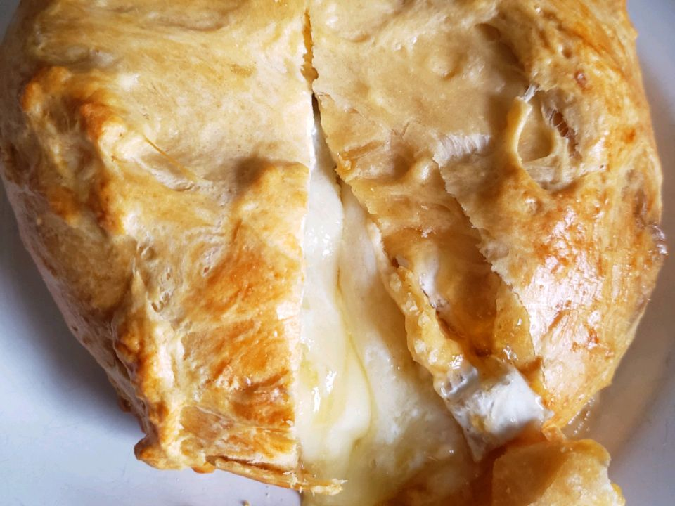

Baked Brie by Susan Jackson

Description
This Brie cheese recipe wraps a whole wheel of Brie cheese filled with preserves in puff pastry. It's baked until the pastry is golden and crisp and Brie is warm and gooey inside for a cheesy treat.
Ingredients
- Brie
- Preserves
- Puff pastry
- Egg white
Steps
- Slice Brie cheese wheel in half so that you have two circles of cheese.
- Sandwich the preserves between the cheese halves, then reassemble.
- Wrap the entire wheel of Brie with the puff pastry.
- Transfer onto the prepared baking sheet seam-side down.
- Brush puff pastry with egg white.